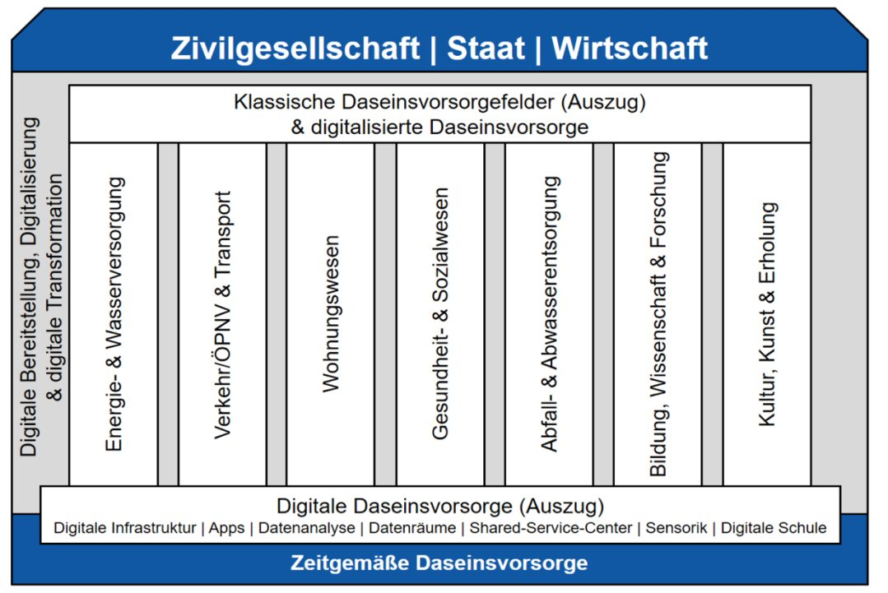

Research · Humboldt Project · 2022
Effects of Collaborative Innovation on the Design of City Apps
How do municipalities develop city apps? A comparative case study of four German cities
Abstract
There is competition between platform companies and urban actors to provide digital public services. This research project investigates the effects of collaborative innovation on the design of city apps in order to further explore and improve the practical implementation of collaborative innovation. For this purpose, a comparative case study of four German city apps was conducted. The results show that city apps are limited in their design by problems known from the literature (technical know-how, conflicts of interest, goal congruence). Further research should conduct area-wide, empirical surveys on the interests of additional urban representatives.
Methods
The project applied a qualitative research design focused on understanding governance and collaboration processes behind city apps. A comparative case study approach was used to analyse multiple city apps across four different German municipalities. Data was collected through semi-structured expert interviews with project leads and operational stakeholders involved in the development and management of the apps. The interviews were systematically coded to identify patterns in cooperation, decision-making and responsibility allocation. Particular attention was paid to governance structures, actor constellations and implementation challenges rather than technical features. This approach allowed for an in-depth understanding of institutional dynamics and power relations shaping digital public services. The qualitative design was chosen to capture complexities that are often overlooked by purely quantitative evaluations of digital tools.

Implications & Personal Learning
The findings imply that the success of city apps depends more on governance capacity and coordination than on technological sophistication. Collaborative innovation can increase legitimacy and idea quality, but only if roles, responsibilities and expectations are clearly defined. Municipalities risk long-term dependency when strategic control over data and development is outsourced to private actors. City apps should therefore be understood as ongoing governance projects rather than short-term digital products.
From this work, I learned to critically assess digitalisation narratives and to distinguish between technical solutions and institutional realities. I also developed a deeper understanding of how public sector constraints shape innovation processes. Personally, the project strengthened my ability to translate abstract governance concepts into concrete, practice-oriented insights.
Interested in the full report (in German) or in how cities build digital services? I am happy to share it.
Write me: lennart.reichow@gmail.com